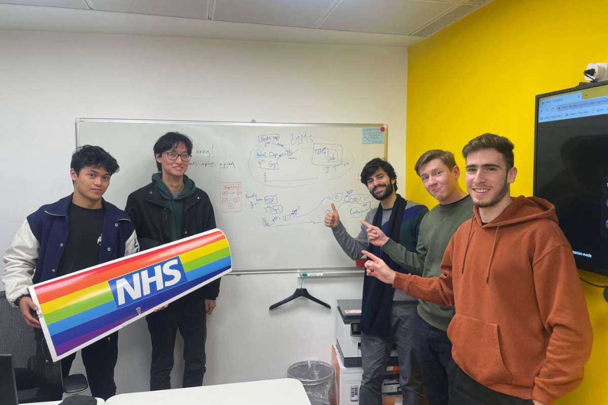

About the Project
Introducing the chalenging problem we have been tasked with solving.
Project Abstract

Problem Statement
The problem we are trying to solve revolves around the timely transportation of pharmaceuticals and other
medical packages within UK hospitals. This is currently achieved through the use of human porters who move
packages around a hospital, delivering according to requests they receive on SMS devices called pagers.
In larger hospitals, drones are made use of to transport packages from building to building where porters
handle the journey and loading of the drones on each end to help save time.
Unfortunately, there are significant inefficiencies with the current system hospitals use as, when there
is a delivery to be made, a request is sent to all porters and the first person who responds to this request
is then responsible for the delivery. This is clearly problematic as it doesn’t take into account a porter’s
proximity to the parcel or their availability.

The Solution
For our solution, porters will be tracked, allowing optimal task assignment based on proximity and availability, so that there are no drones waiting to carry out deliveries. We also aim to make it as intuitive as possible for hospital staff to place a delivery request, in order to reduce patient waiting time.

Achievement and Impact
Our proposed solution to optimize the transportation of pharmaceuticals and other medical packages within UK hospitals
has the potential to revolutionize the way healthcare facilities operate. By implementing a system that tracks the
movements of porters and assigns tasks based on their proximity and availability, we can significantly improve the
efficiency of the delivery process. We are particularly excited moving forward, as we have been informed that our
solution will be demoed in Wansbeck Hospital in March of 2023, with the aim of being deployed to transfer renal pathology
between Guy’s and St Thomas’ hospital later in the year (Q4).
One of the main benefits of our solution is the reduction of waiting times for patients. In the current system, hospital
staff send out requests for deliveries to all porters, which can result in delays as the first available porter may not
be the closest one to the parcel. Our tracking and request system will aim to assign tasks automatically based on the
closest porter to a parcel, thereby reducing the time it takes to deliver packages to patients.
Another key benefit is the improved work-life of porters. The current system can lead to an unequal distribution of tasks,
with some porters receiving more requests than others, while others are left waiting for assignments. This can result in
porters feeling overworked or underutilized. With our solution, the workload will be evenly distributed, and porters will
only be assigned tasks that are within their vicinity and availability. This will lead to a more balanced workload and a
better work-life balance for porters.
Being an ambitious team, we hope our solution will contribute to the innovation of the healthcare industry by introducing
a more efficient and effective mode of pharmaceutical transportation. By optimizing the delivery process through the use of tracking technology, we can significantly reduce
the time it takes to transport packages from one location to another, thus improving the overall efficiency of hospital
operations. This innovation has the potential to set a new standard for how hospitals manage their transportation systems.
Project Video
A technical overview of our solution:

Development Team
Meet the team! The picture below was taken at Apian's head offices during one of our weekly meetings with the company's founders and COO.
Project Management
Follow our project progress with the GANTT Chart below, which indicates what we were working on each week: